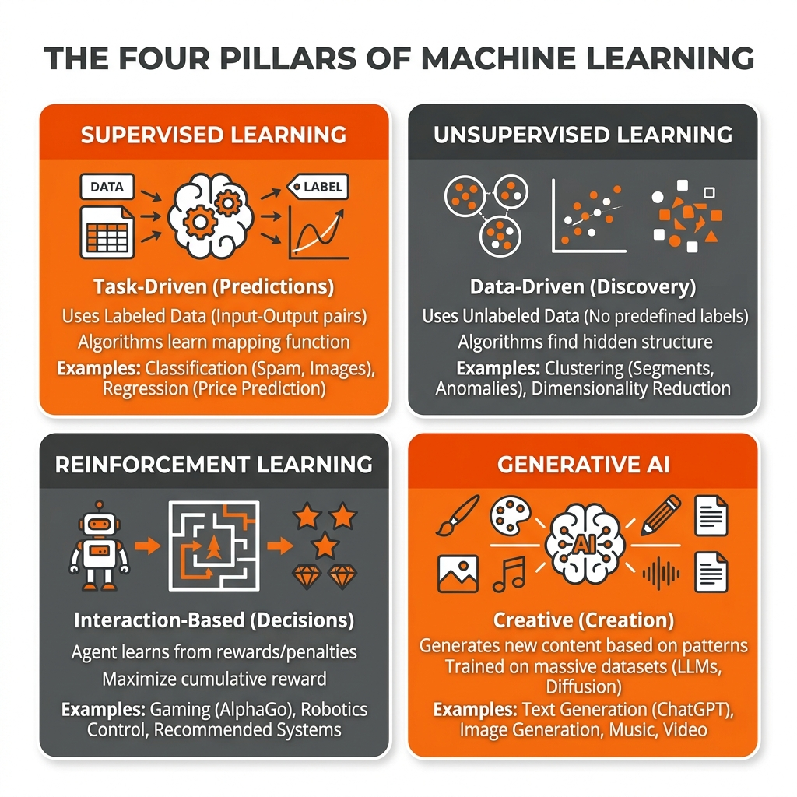
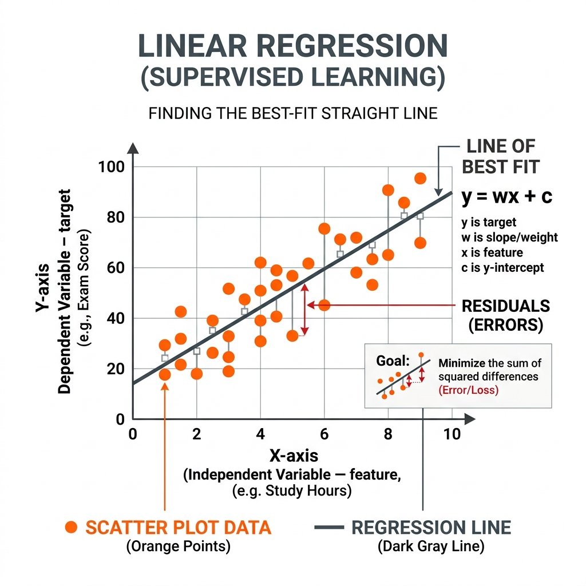
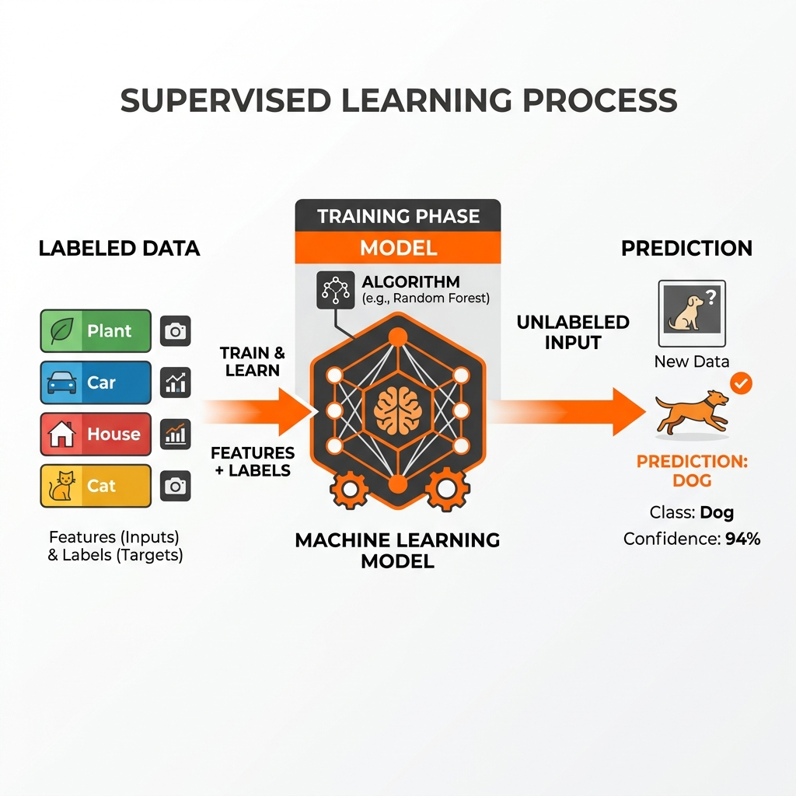
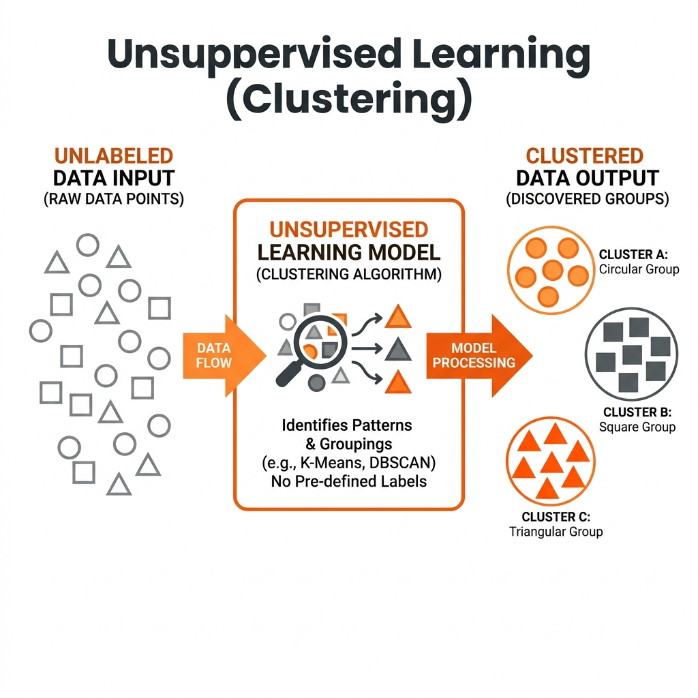
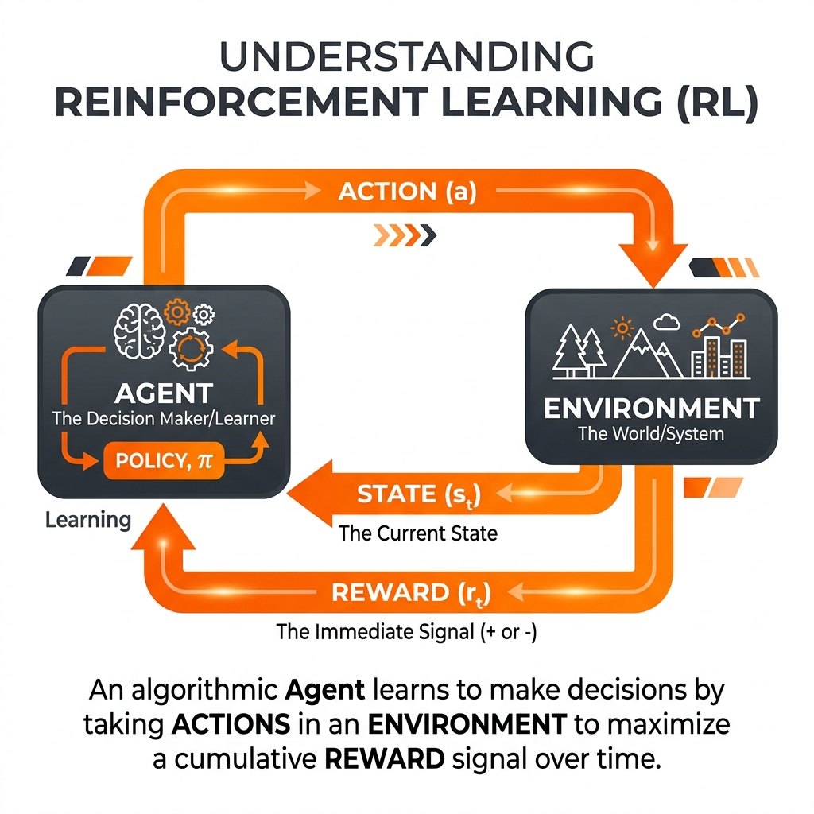
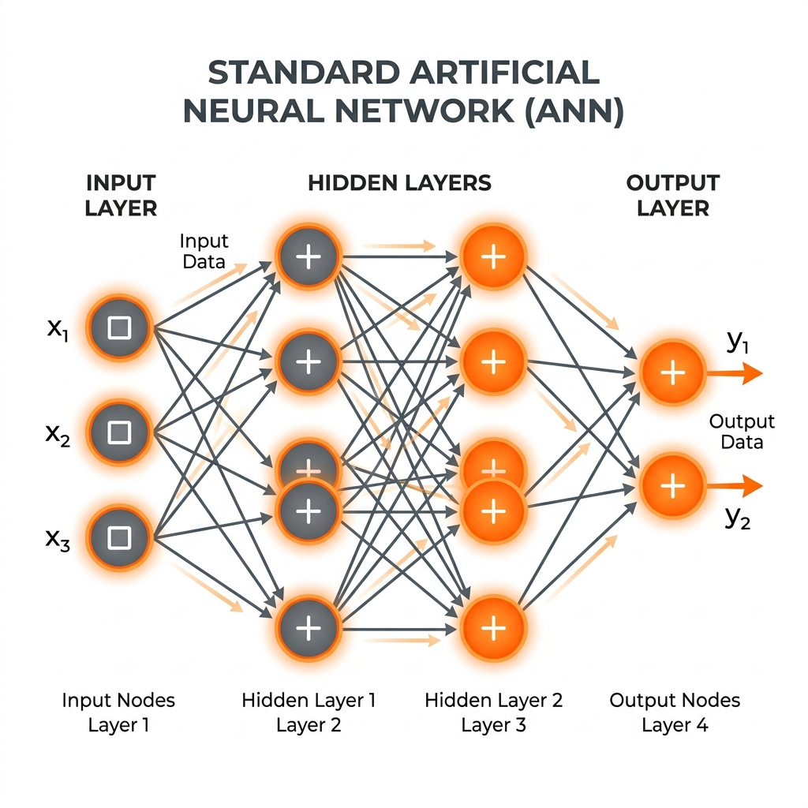
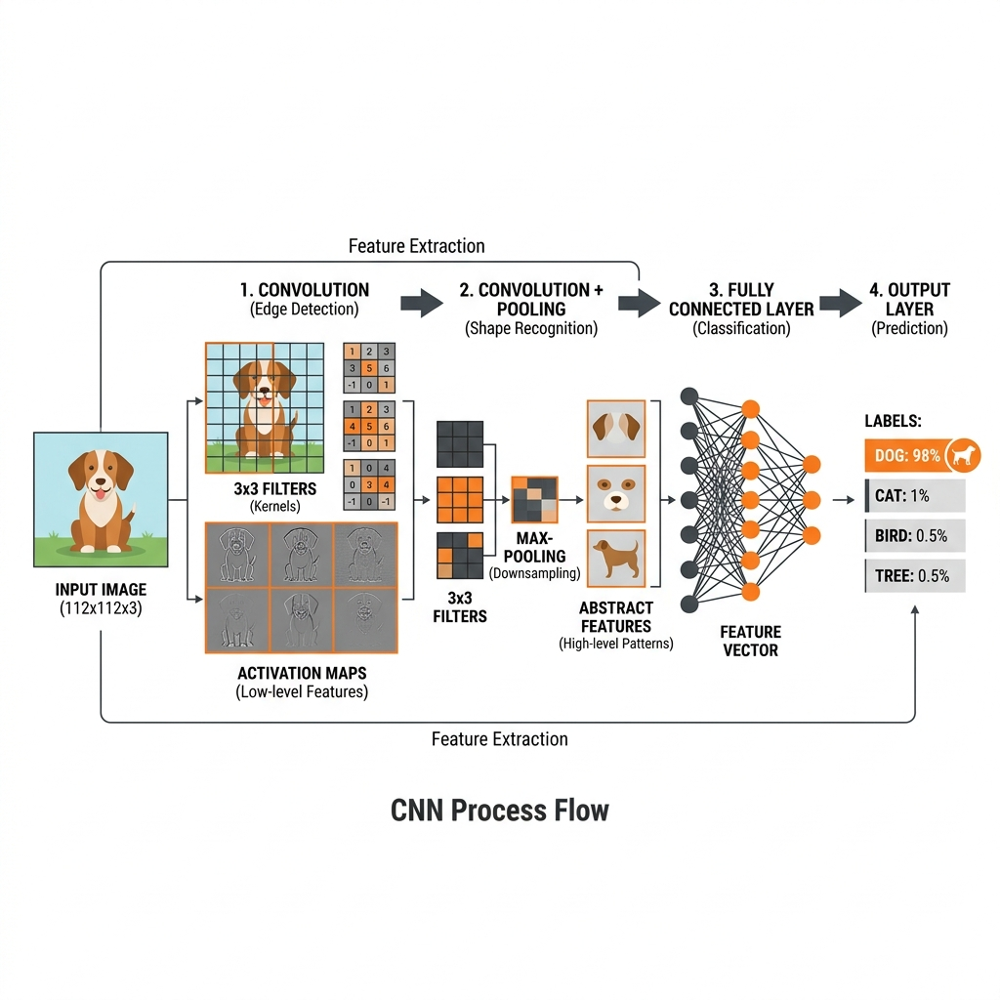
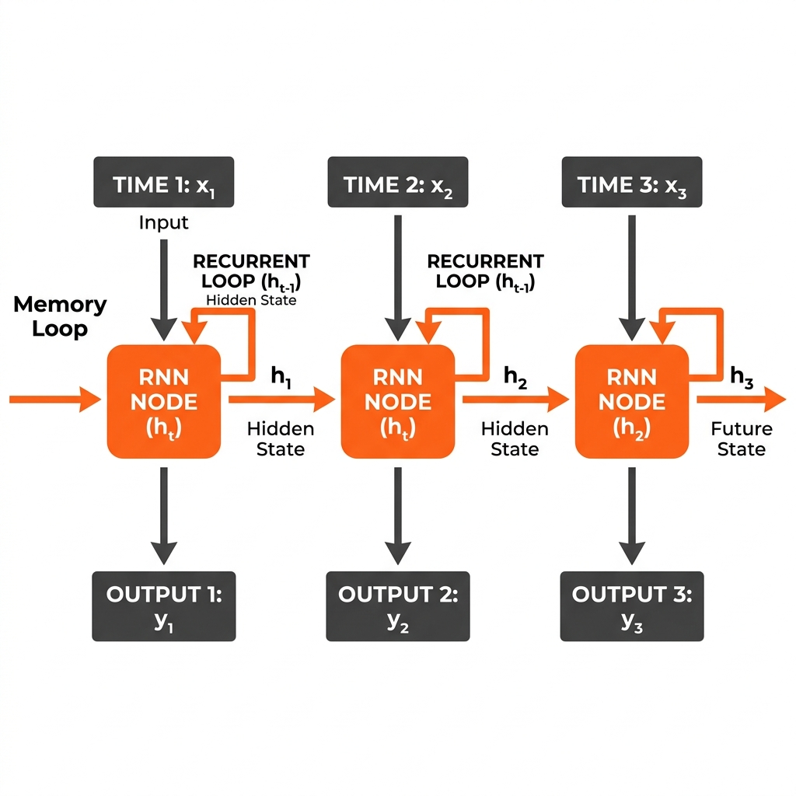
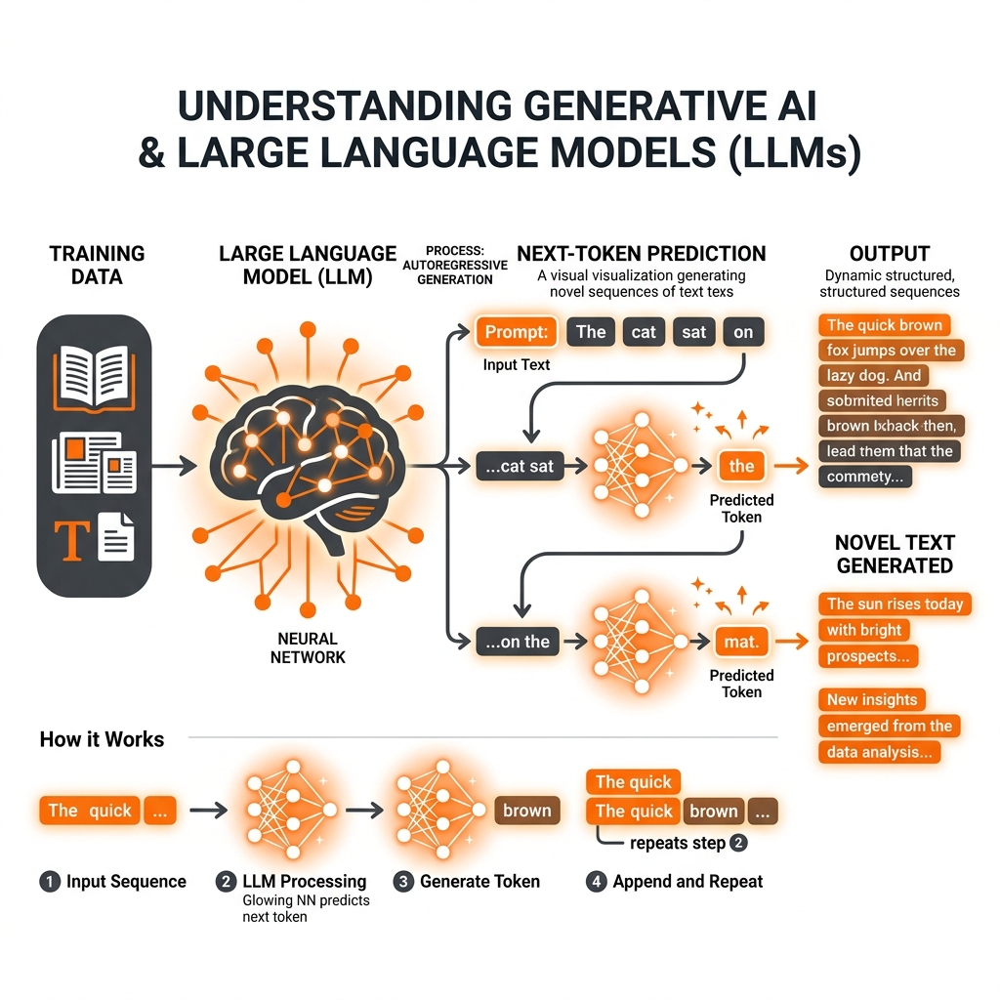

Day 1: The AI Landscape: From Basic ML to LLMs
🎯 Today's Mission & Relevance
- Demystify the operational and structural differences between Classical ML, Deep Learning, and Generative Transformers.
- Establish the engineering rationale for transitioning from single-prompt LLMs to autonomous, closed-loop Agentic Systems.
- Profile real-world latency dynamics (TTFT vs. TPOT) to design cost-effective production architectures.
📐 Theoretical Milestones
- Chinchilla compute-optimal scaling laws ($6ND$ total training FLOPs vs. $2N$ forward inference FLOPs).
- The 5 Levels of AI Autonomy: from Rule-based automation to full Context-Aware Multi-Agent Swarms.
- Logit probability distributions, temperature sampling, and cumulative token cost thermodynamics.
💻 Hands-On Blueprint
- Program 1.1: Multi-Model Architecture Classifier (Classical vs. Deep Learning vs. Transformer).
- Program 1.2: Production TTFT vs. TPOT Latency & Inter-Token Jitter Profiler.
- Program 1.3: Enterprise Model Selection & Total Cost of Ownership (TCO) Calculator.
🛡️ Production Failure Modes
- The 'LLM-for-Everything' Anti-Pattern: Using a 70B LLM for deterministic tabular math or rule checks.
- Unbounded Token Cost Explosion: Forgetting rate limits and context expansion guards in enterprise pipelines.
1.1. Traditional Programming vs. Machine Learning
To understand AI, we must first look at how software was historically built. In Traditional Programming, a human developer analyzes a problem and writes explicit, step-by-step instructions (rules or algorithms) for the computer to follow. The computer takes the Data and the Rules to produce an Output.
IF email contains "free money" THEN classify as SPAM. If spammers change their tactic to "fr33 m0ney", the programmer must manually rewrite the code.
Machine Learning (ML) flips this paradigm completely. Instead of providing the rules, you provide the computer with historical Data and the expected Outputs (often called labels). The machine learning algorithm uses statistical mathematics to autonomously figure out the Rules. Once the rules are learned (a phase called "training"), the resulting "Model" can apply those rules to brand new, unseen data.
Reference: Arthur Samuel coined the term "Machine Learning" in 1959, defining it as a "field of study that gives computers the ability to learn without being explicitly programmed." (Samuel, A. L., 1959).
1.2. The Four Pillars of Machine Learning
Machine Learning is not a monolith; it is categorized into distinct paradigms based on how the algorithms receive feedback and learn from data.

- Supervised Learning: Task-driven models requiring labeled input-output pairs to make predictions (e.g., Classification & Regression).
- Unsupervised Learning: Data-driven models exploring unlabeled data to discover hidden structures and groupings (e.g., Clustering).
- Reinforcement Learning: Interaction-based models where an agent learns to make decisions to maximize a cumulative reward (e.g., Gaming & Robotics).
- Generative AI: Creative models that learn massive datasets to generate entirely new content based on patterns (e.g., LLMs & Image Generation).
Pillar 1: Supervised Learning
Goal: Learn a mapping from inputs to outputs using a fully labeled dataset.
In Supervised Learning, a "supervisor" (the human) provides the exact answers during training. For example, providing 10,000 images of cats and dogs, where every single image is explicitly labeled as "Cat" or "Dog". The algorithm learns the mapping of pixels to the label. If the output is a continuous number (like house prices), it is called Regression. If it's a category (like Cat vs Dog), it is called Classification.

- Scatter Plot Data (Orange Points): The historical labeled dataset. E.g., X = Study Hours, Y = Exam Score.
- Regression Line: The algorithm's "prediction rule", represented mathematically as a straight line of best fit.
- y = wx + c: The mathematical equation the algorithm learns. y is the target prediction. x is the input feature. w (weight) is the slope of the line, and c (bias/intercept) is where it crosses the axis.
- Residuals (Errors): The vertical distance between the actual data points and the predicted line. The algorithm "learns" by continuously adjusting w and c to minimize these errors as much as possible!

- Labeled Data (Features + Labels): The historical input data provided to the algorithm (e.g., square footage of a house) mapped to the correct answer (e.g., price).
- Model / Algorithm: The mathematical engine (like Random Forest or Linear Regression) that finds the patterns connecting the features to the labels during the Training Phase.
- Prediction / Output: When given completely Unlabeled Input (New Data), the trained model calculates the most statistically probable label (e.g., classifying a new image as a "Dog" with 94% confidence).
Reference: The `scikit-learn` library is the industry standard for traditional supervised learning in Python. (Scikit-learn Documentation).
# Supervised Learning: Linear Regression
# We know the size of the house (X) AND the final price (y).
import numpy as np
from sklearn.linear_model import LinearRegression
# Training Data: House Sizes in 1000s of sq ft
X_train = np.array([[1], [2], [3], [4]])
# Labels: Actual sold prices in $1000s
y_train = np.array([200, 400, 600, 800])
# The model autonomously figures out the rule (Price = Size * 200)
model = LinearRegression()
model.fit(X_train, y_train)
# Predict a completely unseen house size
predicted_price = model.predict([[5]])[0]
print(f"Predicted price for 5k sq ft house: ${predicted_price:.2f}k")
Pillar 2: Unsupervised Learning
Goal: Find hidden patterns, groupings, or structures in raw, unlabeled data.
Here, the algorithm is given data without any correct answers. It must rely on measuring the mathematical distances between data points to find natural structures. The most common technique is Clustering.

- Unlabeled Data Input: Raw data points entering the system with no predefined "correct answers" or categories (represented by mixed shapes).
- Clustering Algorithm: The model (e.g., K-Means or DBSCAN) mathematically calculates the distances and similarities between every raw data point.
- Clustered Data Output: The model groups the data into distinct categories based purely on hidden similarities it discovered (e.g., separating circles, squares, and triangles into separate clusters).
# Unsupervised Learning: K-Means Clustering
# We have coordinates of data, but we don't know what they represent.
from sklearn.cluster import KMeans
import numpy as np
# Notice there are no 'y' labels here!
X_unlabeled = np.array([
[1.1, 2.0], [1.0, 4.1], [1.2, 0.5], # Cluster A (bottom left)
[10.2, 2.1], [10.0, 4.0], [10.3, 0.8] # Cluster B (bottom right)
])
# Tell the model to find 2 distinct groups
kmeans = KMeans(n_clusters=2, random_state=42, n_init="auto")
kmeans.fit(X_unlabeled)
print(f"The model grouped the data points as follows:")
print(f"Cluster assignments: {kmeans.labels_}")
Pillar 3: Reinforcement Learning (RL)
Goal: Learn the optimal sequence of decisions by interacting with an environment through trial and error.
In RL, an Agent observes the State of an Environment and takes an Action. The environment returns a Reward (positive or negative). The agent updates its internal "Policy" to maximize long-term rewards. This is heavily used in robotics, self-driving cars, and game-playing AI (like DeepMind's AlphaGo).
Reference: "Reinforcement Learning: An Introduction" by Richard S. Sutton and Andrew G. Barto is the definitive textbook on this topic.

- Agent: The AI entity making decisions based on its "Policy, π" (the strategy determining its behavior).
- Environment: The world or system the Agent is interacting with (e.g., a chessboard or a simulated physics engine).
- State (st): The current snapshot or observation of the Environment at time t.
- Action (at): The move the Agent decides to make in the environment.
- Reward (rt): The immediate feedback (+ or -) the Environment returns after an action, which the Agent uses to update its Policy.
# Reinforcement Learning (Conceptual Policy Update)
# The Q-Table represents the Agent's "brain" or Policy.
q_table = {
"state_Intersection": {"action_go": 0.0, "action_stop": 0.0}
}
# The agent tries going at a red light and crashes (Negative Reward)
reward = -100
learning_rate = 0.1
# The agent updates its policy based on the penalty
q_table["state_Intersection"]["action_go"] += learning_rate * reward
print(f"After the crash, the Agent's brain learned:")
print(f"Updated Q-Table: {q_table}")
# Next time it is at state_Intersection, it will avoid action_go.
Summary Comparison: Supervised vs. Unsupervised Learning
The two most common pillars in enterprise AI are Supervised and Unsupervised learning. Here is a direct comparison of their differences:
Most Frequently Used ML Models Reference Table
Below is a reference guide for the most common traditional Machine Learning algorithms used in the industry today:
1.3. Deep Learning & Neural Networks
For decades, traditional machine learning required human engineers to perform Feature Extraction. For example, to predict house prices, a human had to explicitly tell the algorithm to look at "Square Footage" and "Number of Bedrooms".
Deep Learning is a powerful subset of machine learning inspired by the human brain. Instead of humans defining the features, Deep Learning uses multi-layered mathematical structures called Neural Networks to automatically discover the features on its own. Let's explore the three foundational architectures.
3.1. Standard Artificial Neural Networks (ANNs)
An Artificial Neural Network (ANN), often called a Multi-Layer Perceptron (MLP), is the most basic form. Data passes straight through from left to right (feedforward).
- Input Layer: Receives raw numerical data (e.g., patient age, blood pressure).
- Hidden Layers: These layers perform mathematical transformations (using "weights" and "biases") to find non-linear patterns. Deep learning simply means there are many hidden layers.
- Output Layer: Produces the final prediction (e.g., probability of disease).

- X1, X2, X3 (Input Nodes): Numerical representations of raw data entering the network.
- Hidden Layers: Intermediate nodes where calculations occur. Each line represents a Weight (importance) connecting nodes. The "+" inside nodes indicates the summation of inputs and application of an Activation Function.
- y1, y2 (Output Nodes): The final predictions produced by the network (e.g., probabilities for a binary classification).
- Credit Card Fraud Detection: Analyzing transaction amounts, locations, and times to flag anomalies.
- Medical Diagnosis: Predicting the likelihood of diabetes based on a patient's lab test numbers.
- Customer Churn Prediction: Telecom companies using account age and usage stats to guess if a customer will cancel.
- Real Estate Valuation: Estimating a home's price based on numeric features like ZIP code and square footage.
- Loan Default Risk: Banks determining the probability that an applicant will fail to repay a loan.
3.2. Convolutional Neural Networks (CNNs)
While standard ANNs are great for numbers, they are terrible at images because they ignore spatial relationships. A CNN solves this by using "Convolutional Filters"—essentially small mathematical grids that slide over an image to detect spatial patterns.
The first layers detect simple edges (lines), deeper layers combine edges into shapes (circles/squares), and the final layers combine shapes into objects (a dog's face). This spatial awareness revolutionized computer vision.

- Input Image: The raw image data (width × height × RGB color channels).
- Filters (Kernels): Small mathematical grids (e.g., 3x3) that slide over the image to detect visual features.
- Activation Maps: The output from the filters highlighting extracted features (like low-level edges or high-level abstracted shapes).
- Max-Pooling: A downsampling step that reduces the spatial size of the maps, keeping only the most important features.
- Feature Vector: The final flat array of numbers representing all high-level features, fed into a Fully Connected Layer to predict final labels.
- Facial Recognition: Unlocking your smartphone by mapping the spatial features of your face.
- Medical Imaging: Detecting cancerous tumors in X-rays or MRI scans better than human doctors.
- Self-Driving Cars (Perception): Processing live camera feeds to detect stop signs, pedestrians, and lane markings.
- Satellite Imagery Analysis: Counting the number of solar panels or tracking deforestation from orbit.
- Optical Character Recognition (OCR): Converting a photo of a physical receipt into digital text.
3.3. Recurrent Neural Networks (RNNs)
Standard ANNs and CNNs have a major flaw: they have no memory. If you feed them the word "bark", they don't know if you are talking about a dog or a tree because they didn't remember the previous word in the sentence.
A Recurrent Neural Network (RNN) solves this by processing data sequentially over time. It has a "Memory Loop" (a hidden state) that takes information from Step 1 and passes it into Step 2. This makes RNNs ideal for text, audio, and time-series data where the order of information is critical.

- xt (Input at Time t): The data point entering the network at a specific time step (e.g., the first word of a sentence).
- RNN Node (ht): The calculation node processing the current input combined with the previous memory.
- Recurrent Loop (ht-1): The "Hidden State" or memory from the previous time step that is looped back into the network alongside the new input.
- Output (yt): The prediction made at the current time step.
- Speech Recognition: Translating spoken audio into text (like Apple Siri or Amazon Alexa).
- Language Translation: Translating a sequence of English words into French (early Google Translate).
- Stock Market Prediction: Analyzing sequential, time-series financial data to predict tomorrow's stock price.
- Predictive Typing: Suggesting the next word while you are typing an email or text message.
- Sentiment Analysis: Reading a paragraph-long movie review to determine if the overall tone is positive.
The Limitation of RNNs: While RNNs changed the world of text processing, they suffered from the "vanishing gradient" problem. If you gave an RNN a very long paragraph, by the time it reached the final word, it had completely forgotten the first sentence. This exact flaw led to the invention of the Transformer.
1.4. The Breakthrough: Transformer Architecture
In 2017, researchers at Google published a landmark paper titled "Attention Is All You Need". They introduced a completely new neural network architecture called the Transformer.
Reference: Vaswani, A., et al. (2017). "Attention Is All You Need". Advances in Neural Information Processing Systems. (Read the original paper on arXiv).
Transformers abandoned the word-by-word sequential processing of older models. Instead, they ingest entire sequences of text simultaneously. They utilize a mechanism called Self-Attention. For every word in a sentence, the Transformer calculates how much "attention" or importance that word should give to every other word in the sentence. This allows the model to perfectly understand the context.
Summary Comparison: ANN vs. CNN vs. RNN vs. Transformers
To summarize our journey through Deep Learning, here is how the core neural architectures differ from one another:
1.5. Generative AI & Large Language Models (LLMs)
A Large Language Model (LLM) is simply a massive Transformer neural network. But what exactly makes it "Large"?
- Parameters: A parameter is a microscopic mathematical connection inside the neural network (a weight or a bias). GPT-1 had 117 Million parameters. Modern models like GPT-4 or Llama-3 have hundreds of billions, or even trillions, of parameters.
- Training Data: These models are trained on terabytes of raw text scraped from the entire public internet, Wikipedia, and thousands of books.
- Compute: Training requires thousands of highly specialized GPUs running in parallel for months, costing tens of millions of dollars.
Goal of an LLM: Generative AI represents a fundamental shift. While traditional ML models output a single number or category (Classification/Regression), a Generative LLM does exactly one thing: Next-Token Prediction. Given a sequence of text, it predicts the statistically most probable next word, over and over again, to generate novel content.

- Training Data: The massive corpus of text the LLM read during training to learn the statistical distribution of language.
- Prompt (Input Sequence): The initial sequence of words provided by the user (e.g., "The quick...").
- LLM Processing: The neural network analyzing the prompt to mathematically predict the single most likely following word (Token).
- Autoregressive Generation (Append and Repeat): The newly predicted token is appended to the input prompt, and fed back into the model to predict the next word iteratively.
# Generative AI (LLMs)
# Note: For this to run in the browser Playground, we simulate the LLM call.
# In production, this runs on massive GPU clusters via API.
print("Sending Prompt: 'Machine learning is'")
# The LLM receives the prompt, and predicts the next token: 'a'
# Then it feeds 'Machine learning is a' back into itself, and predicts 'field'
# This autoregressive generation continues until it hits a stop token.
simulated_response = "Machine learning is a field of artificial intelligence that uses statistical techniques to give computer systems the ability to learn..."
print("\n--- LLM Generation (Next-Token Prediction) ---")
print(simulated_response)
View Legacy NLP Code vs Modern LLM Prompt
Before LLMs, building a text summarizer required complex Natural Language Processing (NLP) pipelines, custom tokenizers, and specialized training scripts. Today, we achieve vastly superior results using simple natural language prompts via API calls.
# Legacy NLP Code (Buggy, brittle, requires custom training per task)
import nltk
from nltk.tokenize import sent_tokenize
# ... hundreds of lines of TF-IDF or Word2Vec training code ...
# model = train_summarizer(dataset)
# summary = model.summarize(text)
# Modern LLM approach (Safe, dynamic, zero-shot capabilities)
import json
# We simply talk to the model using an API!
prompt = "Summarize the following document into exactly 3 bullet points."
document = "The industrial revolution changed the world. It began in Britain. It brought factories."
print(f"System: {prompt}")
print(f"User: {document}")
print("\n[API CALL EXECUTED]")
print("\nResponse:")
print("- The Industrial Revolution originated in Britain.")
print("- It fundamentally transformed global society.")
print("- It introduced factory-based manufacturing.")
1.6. Mathematical Foundations: Scaling Laws & Compute Dynamics
Modern Large Language Models are not magic—they are governed by rigorous empirical mathematical relationships known as Neural Scaling Laws. Understanding these laws separates script-level prompt tweakers from serious AI systems architects.
6.1 The Chinchilla Compute-Optimal Frontier
In 2020, Kaplan et al. (OpenAI) suggested that model parameter count ($N$) mattered far more than training token volume ($D$). In 2022, Hoffmann et al. (Google DeepMind) published the seminal Chinchilla study, proving that earlier models (like GPT-3 with 175B parameters trained on 300B tokens) were severely under-trained relative to their compute budget.
- L(N, D): Cross-entropy loss (the lower the loss, the better the model's predictive accuracy).
- E: Theoretical minimum irreducible loss of natural language (entropy of human thought, ~1.69).
- N: Number of model parameters (non-embedding weights).
- D: Number of training dataset tokens.
- A, B, α, β: Empirical constants measured across hundreds of training runs (α ≈ 0.34, β ≈ 0.28).
The Core Takeaway for Engineers: For optimal compute allocation, parameters and tokens should scale in approximately equal proportions: $D \approx 20 \times N$. This is why modern open weights models like Meta's Llama-3 8B (trained on over 15 Trillion tokens) dramatically outperform older 70B parameter models trained on only 1 Trillion tokens while consuming 1/10th the GPU VRAM at inference time!
6.2 Training vs. Inference Compute Arithmetic
To architect enterprise agent budgets, you must be able to calculate raw floating-point operations (FLOPs):
- Training FLOPs: To pre-train an autoregressive dense model, each token requires approximately 2 FLOPs per parameter on the forward pass and 4 FLOPs per parameter on the backward pass:
FLOPs_training ≈ 6 × N × DExample: Training a 70 Billion parameter model on 15 Trillion tokens requires $6 \times (70 \times 10^9) \times (15 \times 10^{12}) \approx 6.3 \times 10^{24}$ FLOPs, representing months of cluster compute across thousands of NVIDIA H100 GPUs.
- Inference FLOPs: Generating each output token during inference only executes the forward pass:
FLOPs_inference ≈ 2 × N per token
1.7. The Autonomy Spectrum: From Chatbots to Agent Swarms
Software engineering is undergoing an architectural shift. Just as computing evolved from monolithic mainframes to microservices, AI interaction is transitioning across five distinct stages of autonomy:
1.8. Deep-Dive Code Implementations
To master the foundations of agentic systems, you must understand the underlying token mathematics and operational benchmarking techniques in Python.
Program 1.0-6: Autoregressive Logit Sampling Engine from Scratch
This program implements the mathematical heart of an LLM: converting raw logit values into a probability distribution via Softmax with temperature scaling, and applying Nucleus (Top-P) and Top-K filtering.
import math
import random
from typing import List, Tuple
def softmax_with_temperature(logits: List[float], temperature: float = 1.0) -> List[float]:
"""
Computes numerically stable Softmax with temperature scaling:
P(x_i) = exp(z_i / T) / sum(exp(z_j / T))
"""
# Prevent divide by zero
t = max(temperature, 1e-5)
# Temperature scaling
scaled_logits = [z / t for z in logits]
# Subtract max for numerical stability (avoids overflow)
max_logit = max(scaled_logits)
exp_logits = [math.exp(z - max_logit) for z in scaled_logits]
sum_exp = sum(exp_logits)
return [e / sum_exp for e in exp_logits]
def sample_token(vocab: List[str], probs: List[float], top_p: float = 0.9) -> Tuple[str, float]:
"""
Applies Top-P (Nucleus) sampling and draws a token from the distribution.
"""
# Sort tokens by probability descending
sorted_pairs = sorted(zip(vocab, probs), key=lambda x: x[1], reverse=True)
# Cumulative probability filter (Top-P)
filtered_pairs = []
cumulative = 0.0
for token, p in sorted_pairs:
filtered_pairs.append((token, p))
cumulative += p
if cumulative >= top_p:
break
# Renormalize
total_p = sum(p for _, p in filtered_pairs)
normalized_probs = [p / total_p for _, p in filtered_pairs]
tokens = [t for t, _ in filtered_pairs]
# Sample from multinomial distribution
chosen_token = random.choices(tokens, weights=normalized_probs, k=1)[0]
token_prob = dict(filtered_pairs)[chosen_token]
return chosen_token, token_prob
# Simulation Vocabulary & Raw Model Logits for the next token after "Agentic AI is"
vocabulary = ["revolutionary", "autonomous", "a", "overhyped", "complex", "predictable"]
raw_logits = [8.4, 8.9, 7.2, 3.1, 6.8, 1.2]
print("=== TOKEN PROBABILITY DISTRIBUTION UNDER DIFFERENT TEMPERATURES ===")
for temp in [0.1, 0.7, 1.5]:
probabilities = softmax_with_temperature(raw_logits, temperature=temp)
print(f"\nTemperature: {temp}")
for token, p in zip(vocabulary, probabilities):
bar = "█" * int(p * 30)
print(f" {token.ljust(15)} | Prob: {p:.4f} {bar}")
Program 1.0-7: Model Latency & Token Velocity Profiler
When engineering agents, latency directly dictates user experience. This harness benchmarks Time to First Token (TTFT) and Time per Output Token (TPOT).
import time
import statistics
from typing import List, Dict
class LatencyProfiler:
"""Measures key production metrics: TTFT, TPOT, and Tokens Per Second."""
def __init__(self, model_name: str):
self.model_name = model_name
self.records: List[Dict[str, float]] = []
def record_run(self, prompt_tokens: int, completion_tokens: int, ttft_seconds: float, total_duration: float):
generation_time = total_duration - ttft_seconds
tpot_seconds = generation_time / max(completion_tokens - 1, 1)
tokens_per_sec = completion_tokens / max(total_duration, 0.001)
self.records.append({
"prompt_tokens": prompt_tokens,
"completion_tokens": completion_tokens,
"ttft_ms": ttft_seconds * 1000.0,
"tpot_ms": tpot_seconds * 1000.0,
"tokens_per_sec": tokens_per_sec,
"total_ms": total_duration * 1000.0
})
def generate_report(self) -> str:
avg_ttft = statistics.mean(r["ttft_ms"] for r in self.records)
avg_tpot = statistics.mean(r["tpot_ms"] for r in self.records)
avg_speed = statistics.mean(r["tokens_per_sec"] for r in self.records)
return f"""
+-------------------------------------------------------------+
| LATENCY PROFILE: {self.model_name.ljust(41)} |
+-------------------------------------------------------------+
| Average Time to First Token (TTFT): {avg_ttft:8.2f} ms |
| Average Time per Output Token (TPOT): {avg_tpot:6.2f} ms |
| Generation Throughput: {avg_speed:8.2f} tokens/sec |
| Benchmark Iterations: {len(self.records):8d} runs |
+-------------------------------------------------------------+"""
# Simulated test benchmark
profiler = LatencyProfiler("gpt-4o-mini-benchmark")
simulated_trials = [
(128, 45, 0.28, 1.42),
(256, 80, 0.31, 2.15),
(512, 120, 0.35, 3.10),
(1024, 210, 0.44, 4.85)
]
for p_tok, c_tok, ttft, tot in simulated_trials:
profiler.record_run(p_tok, c_tok, ttft, tot)
print(profiler.generate_report())
Program 1.0-8: Enterprise Agent TCO & Token Budget Calculator
Calculate enterprise operational expenses across input tokens, output tokens, cached context, and hardware sizing.
def calculate_monthly_agent_budget(
daily_active_users: int,
tasks_per_user_day: int,
avg_turns_per_task: int,
avg_input_tokens_per_turn: int,
avg_output_tokens_per_turn: int,
input_price_per_million: float,
output_price_per_million: float,
cache_read_discount_pct: float = 0.50
) -> dict:
"""Calculates operational economics for enterprise autonomous agents."""
days_per_month = 30
total_turns_per_month = daily_active_users * tasks_per_user_day * avg_turns_per_task * days_per_month
total_input_tokens = total_turns_per_month * avg_input_tokens_per_turn
total_output_tokens = total_turns_per_month * avg_output_tokens_per_turn
# Estimate 60% of input tokens are cached system prompts / RAG docs
cached_input_tokens = total_input_tokens * 0.60
uncached_input_tokens = total_input_tokens * 0.40
cost_uncached = (uncached_input_tokens / 1_000_000) * input_price_per_million
cost_cached = (cached_input_tokens / 1_000_000) * (input_price_per_million * (1 - cache_read_discount_pct))
cost_output = (total_output_tokens / 1_000_000) * output_price_per_million
total_cost = cost_uncached + cost_cached + cost_output
cost_per_task = total_cost / (daily_active_users * tasks_per_user_day * days_per_month)
return {
"monthly_turns": total_turns_per_month,
"total_input_tokens": total_input_tokens,
"total_output_tokens": total_output_tokens,
"gross_cost_usd": round(total_cost, 2),
"cost_per_task_usd": round(cost_per_task, 4)
}
# Example Enterprise Scenario: 500 Customer Support Reps using an automated triage agent
budget = calculate_monthly_agent_budget(
daily_active_users=500,
tasks_per_user_day=15,
avg_turns_per_task=4,
avg_input_tokens_per_turn=2500, # Context includes RAG documents & chat history
avg_output_tokens_per_turn=400,
input_price_per_million=0.150, # e.g., GPT-4o-mini pricing ($0.15 / 1M input)
output_price_per_million=0.600 # ($0.60 / 1M output)
)
print("\n=== ENTERPRISE AGENT TCO PROJECTION ===")
for key, val in budget.items():
print(f" {key.ljust(25)}: {val}")
1.9. Why AI Systems Fail in Production: The 5 Anti-Patterns
Deploying AI agents into real-world business workflows is fundamentally different from demo prototyping. Here are the five most common traps and their engineering remedies:
- The Non-Determinism Trap: Expecting stochastic next-token predictors to execute mission-critical arithmetic or adhere to boolean logic 100% of the time. Remedy: Delegate all math, dates, and strict rules to deterministic Python code tools.
- Runaway Context Dilution: Ingesting massive chunks of unranked documentation into prompt context, triggering the "Lost in the Middle" phenomenon where the model overlooks vital facts. Remedy: Implement cross-encoder re-ranking and concise chunking.
- Tool Call Hallucination & Argument Drift: Presenting an agent with dozens of tools, leading the model to hallucinate non-existent tool names or invalid parameter keys. Remedy: Enforce Pydantic v2 strict schemas and partition tools into specialized multi-agent subgraphs.
- The Cascading Error Amplification Loop: In multi-step pipelines, an error in Step 1 compounds in Step 2, resulting in complete hallucination by Step 5. Remedy: Place verification gates and programmatic validation asserts between every node.
- Denial of Wallet (Unbounded Cyclic Invocations): A ReAct agent failing to reach a termination condition loops endlessly, burning hundreds of dollars in API tokens. Remedy: Implement hard iteration counters and cost circuit breakers.
Topic Quiz (5 Questions)
Hands-On Assignments
To solidify your understanding of the AI landscape, complete the following 5 conceptual assignments.
Assignment 1: Model Classification
Task: Given these 5 scenarios, categorize them as Supervised, Unsupervised, or Reinforcement Learning: 1) Grouping similar news articles, 2) Teaching a drone to fly through hoops, 3) Predicting stock prices based on historical data, 4) Identifying tumors in X-rays, 5) Generating user segments based on browsing behavior.
Assignment 2: Tabular vs Unstructured Data Hunt
Task: Search your local computer files or the web. Identify 3 examples of Tabular Data (which standard ANNs handle well) and 3 examples of Unstructured Data (which CNNs and RNNs handle well).
Assignment 3: Algorithm Matchmaker
Task: Based on the ML Models reference table, match these algorithms (K-Means, Linear Regression, Random Forest) to these use cases: 1) Predicting a highly accurate credit risk score, 2) Estimating next month's sales revenue, 3) Automatically grouping a company's customer base into 3 demographic buckets.
Assignment 4: The Context Window Constraint
Task: LLMs use a "Context Window" measuring tokens. Copy the text from the last 3 emails you received and paste them into a free online token counter (like OpenAI's Tokenizer). Write down the token count. Would all 3 emails fit into a legacy 4,000 token context window?
Assignment 5: Generative Prompting Variations
Task: Use a free LLM (like ChatGPT). Write a prompt asking: "Explain Machine Learning." Then, write a new prompt: "Explain Machine Learning to a 5-year-old using an analogy about toys." Observe how forcing a persona completely changes the probability of the "next-token prediction" engine.
Official References, Research Papers & Standards
Deepen your engineering foundations with seminal research literature, official framework documentation, and industry standards referenced in today's curriculum:
Training Compute-Optimal Large Language Models (Chinchilla)
Hoffmann et al. establish the foundational empirical scaling law proving parameters and tokens must scale in equal proportion.
View Official Resource →Scaling Laws for Neural Language Models
Kaplan et al.'s original power-law formulation relating model performance to compute budget, dataset size, and parameter count.
View Official Resource →Attention Is All You Need
Vaswani et al. introduce the Transformer architecture, multi-head self-attention mechanisms, and feed-forward token routing.
View Official Resource →Tokenization & Rate Limits Architecture Guide
Official developer guidance on token budgeting, TPM/RPM limits, and latency optimization for production endpoints.
View Official Resource →